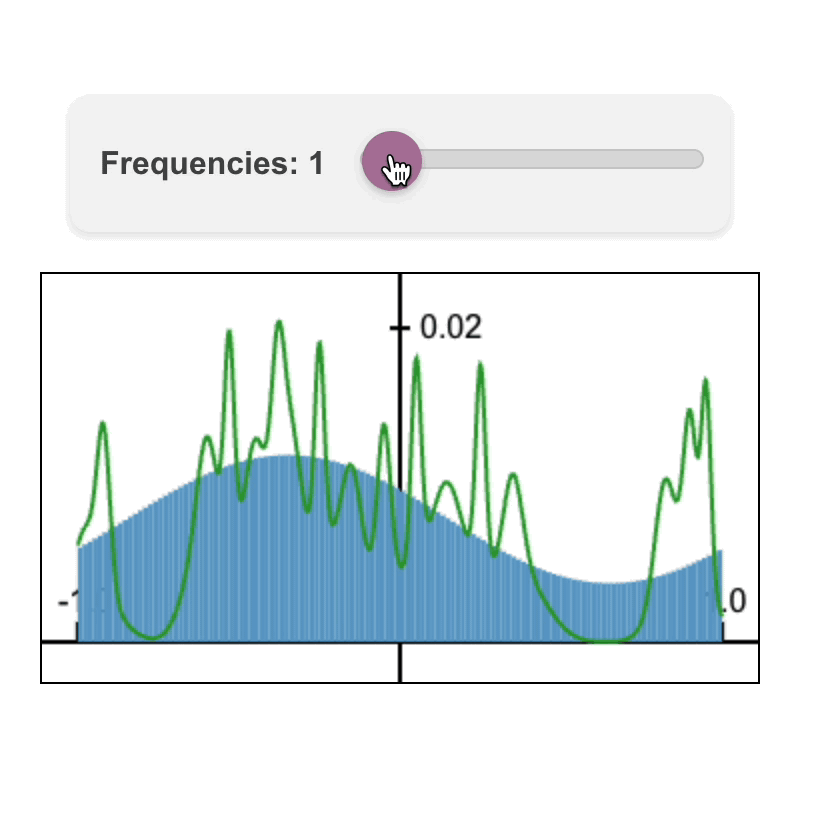

Howdy!! I'm a PhD student at Brown University,
where I'm fortunate to be advised by
Chen Sun.
I'm supported by Brown's
Department of Mathematics and
Department of Computer Science.
I study machine learning, computer vision, and artifical intelligence.
My current research focuses on video generative modeling and world modeling.
I like training deep generative models which approximate real-world physics.
If you're at Brown and you're interested in working on a research project with me,
please email me directly, and attach your CV and transcripts.
In the past I also did work in cryptography and pure mathematics, including number theory, algebraic geometry, and geometric measure theory. Fun fact: I actually started grad school as a PhD student in Brown's math department, conducting research in analytic number theory and cryptography with Jeff Hoffstein. I've since switched to AI, but I still like to make my background in pure math useful in my AI research. After getting my masters degree in mathematics in spring 2022, I took a professional leave of absence for a year to gain exposure to ML in industry. I did three internships: at American Express AI Labs , Akkio (a no-code AI startup), and Captions (an AI video editing startup).
I completed my undergraduate degree at Wesleyan University. During my time in college I spent one semester at the Math in Moscow program and another at the Budapest Semesters in Mathematics program. My undergraduate math research advisor was Ken Ono, I spent two summers doing research with him at Emory University's Research Experience for Undergraduates.
I'm particularly inspired by the life of Walter Pitts, who proposed the first mathematical model of the neural network.
Resume
/
Google Scholar
/ Semantic Scholar
/
Github
/
arXiv
/
LinkedIn
/
Twitter
In the past I also did work in cryptography and pure mathematics, including number theory, algebraic geometry, and geometric measure theory. Fun fact: I actually started grad school as a PhD student in Brown's math department, conducting research in analytic number theory and cryptography with Jeff Hoffstein. I've since switched to AI, but I still like to make my background in pure math useful in my AI research. After getting my masters degree in mathematics in spring 2022, I took a professional leave of absence for a year to gain exposure to ML in industry. I did three internships: at American Express AI Labs , Akkio (a no-code AI startup), and Captions (an AI video editing startup).
I completed my undergraduate degree at Wesleyan University. During my time in college I spent one semester at the Math in Moscow program and another at the Budapest Semesters in Mathematics program. My undergraduate math research advisor was Ken Ono, I spent two summers doing research with him at Emory University's Research Experience for Undergraduates.
I'm particularly inspired by the life of Walter Pitts, who proposed the first mathematical model of the neural network.
nate_gillman [at] brown.edu
Publications (AI/ML)
2026 Goal Force: Teaching Video Models To Accomplish Physics-Conditioned Goals
Goal Force: Teaching Video Models To Accomplish Physics-Conditioned GoalsNate Gillman, Yinghua Zhou, Zitian Tang, Evan Luo, Arjan Chakravarthy, Daksh Aggarwal, Michael Freeman, Charles Herrmann, and Chen Sun.
arXiv / Code / Project Page
Force Prompting: Video Generation Models Can Learn and Generalize Physics-based Control Signals
Nate Gillman, Charles Herrmann*, Michael Freeman, Daksh Aggarwal, Evan Luo, Deqing Sun, and Chen Sun*. NeurIPS 2025.
arXiv / Code / Project Page
2024
Nate Gillman, Charles Herrmann*, Michael Freeman, Daksh Aggarwal, Evan Luo, Deqing Sun, and Chen Sun*. NeurIPS 2025.
arXiv / Code / Project Page

 Fourier Head: Helping Large Language Models Learn Complex Probability Distributions
Fourier Head: Helping Large Language Models Learn Complex Probability Distributions
Nate Gillman*, Daksh Aggarwal*, Michael Freeman, Saurabh Singh, and Chen Sun. ICLR 2025.
arXiv / Code / Project Page
Fourier Head: Helping Large Language Models Learn Complex Probability DistributionsNate Gillman*, Daksh Aggarwal*, Michael Freeman, Saurabh Singh, and Chen Sun. ICLR 2025.
arXiv / Code / Project Page
 Self-Correcting Self-Consuming Loops for Generative Model Training
Self-Correcting Self-Consuming Loops for Generative Model TrainingNate Gillman, Michael Freeman, Daksh Aggarwal, Chia-Hong Hsu, Calvin Luo, Yonglong Tian, and Chen Sun. ICML 2024.
arXiv / Code / Project Page / Conference
 IsoScore: Measuring the Uniformity of Embedding Space Utilization
IsoScore: Measuring the Uniformity of Embedding Space UtilizationWilliam Rudman, Nate Gillman, Taylor Rayne, and Carsten Eickhoff. ACL 2022.
arXiv / Code / Conference
Patents (AI/ML)
2022
Methods and systems for automatically generating and executing computer code using a natural language description of a data manipulation to be performed on a data set
Nate Gillman, Nadia Laflaf, Abraham Parangi, Jonathon Reilly, and Nathan Wies. U.S. Patent Application No. WO 2024/073098 A1. Filed Sep 29, 2023.
Nate Gillman, Nadia Laflaf, Abraham Parangi, Jonathon Reilly, and Nathan Wies. U.S. Patent Application No. WO 2024/073098 A1. Filed Sep 29, 2023.
Publications (Mathematics)
2021 Large sets with small injective projections
Large sets with small injective projectionsFrank Coen, Nate Gillman, Tamás Keleti, Dylan King, and Jennifer Zhu (2021). Annales Fennici Mathematici, 46(2), 683-702.
arXiv / Journal
 Patterns of primes in the Sato-Tate conjecture
Patterns of primes in the Sato-Tate conjectureNate Gillman, Michael Kural, Alexandru Pascadi, Junyao Peng, and Ashwin Sah (2020). Research in Number Theory, 6(9).
arXiv / Journal / MathSciNet
 Explicit subconvexity savings for sup-norms of cusp forms on PGL(n,R)
Explicit subconvexity savings for sup-norms of cusp forms on PGL(n,R)Nate Gillman (2020). Journal of Number Theory, 206, 46-61.
arXiv / Journal / MathSciNet
 From partitions to Hodge numbers of Hilbert schemes of surfaces
From partitions to Hodge numbers of Hilbert schemes of surfacesNate Gillman, Xavier Gonzalez, Ken Ono, Larry Rolen, and Matthew Schoenbauer (2019). Philosophical Transactions of the Royal Society A, 378: 20180435.
arXiv / Journal / MathSciNet
 Exact formulas for invariants of Hilbert schemes
Exact formulas for invariants of Hilbert schemesNate Gillman, Xavier Gonzalez, and Matthew Schoenbauer (2018). Research in Number Theory 4(39).
arXiv / Journal / MathSciNet
Updates
- [Oct-2024] Our arXiv preprint proposes a new neural network layer, the Fourier head, which learns a continuous probability density function using Fourier series, and returns a discrete approximation of it. When to use it? Large language models are often adapted to model non-linguistic tokens. If these tokens have an underlying continuous structure, then replacing the linear classification head with the Fourier head can boost downstream performance. You can find code and visuals on our project page.
- [Feb-2024] Our arXiv preprint aims to stabilize self-consuming generative model training. We support our proposed method with rigorous proofs, as well as experiments on the challenging human motion synthesis task. You can find human motion visuals and code on our project page.